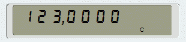

Usage
Operation
Online Help
To view this Online Help from within the Simulator press F1.
By default, the Simulator uses the Mozilla web browser to display the online help. If this is not installed on your system, the Simulator will automatically select another browser. You can also specify your preferred browser in the Help File Browser section of the preferences.
Using the Mouse
Each key on the real HP-15C has three functions: A primary function in white and two secondary functions in gold and blue. Pressing the key itself calls up the primary function. To call up a secondary function, click on one of the two shift keys f or g, followed by the key with the secondary function. The Simulator behaves in exactly the same way when you click the keys with the mouse.
On the Simulator, you can also access the secondary functions also by clicking directly on the gold and blue labels. You do not need to click the f or g key first. This behaviour can be disabled in the Simulator section of the Preferences.
When you move the mouse over a gold or blue label, the label is be highlighted, i.e. the foreground and background colours are swapped. If a shift key is active, the letters "f" or "g" are displayed in the status line of the display, the highlighting is only active for the corresponding functions. The highlighting can be disabled in the Simulator section of the Preferences. The highlighting is always off when the direct access to the secondary functions is disabled.
If you click on a gold label when the blue functions are active, indicated by the letter "g" in the display, the blue function
is called and not the gold one you clicked on. So the sequence
g →H.MS does not call the function
→H.MS but →H. The behaviour is the same when the gold
functions are active and you click on a blue label.
In general, clicking on any of the three parts of a Simulator key while a secondary function indicator is shown in the display will invoke the corresponding secondary function of that key.
Using the Keyboard
Each Simulator key is mapped to a specific keyboard key (see section Keyboard). Pressing the keyboard key has the same effect as clicking the key with the mouse. This allows the simulator to be used in almost the same way as the real HP-15C. For example, the SIN key is mapped to the keyboard key S; so pressing S computes the sine of the value in the display. To compute the inverse sine you can either click on SIN-1 or type the sequence G S on the computer keyboard.
On the real HP-15C only two keys, SST and BST in PRGM mode, have auto-repeat functionality. On the Simulator the auto-repeat functionality depends on the operating system:
- Windows: No auto-repeat for any key.
- Linux: If auto-repeat is enabled in the system settings, all keys have auto-repeat functionality.
Exceptions tp this rule are:
- → or SST (in Run mode)
- I or (i)
- space or PREFIX
- MEM
These keys behave differently for the <KeyPress> (<ButtonPress>) and the <KeyRelease> (<ButtonRelease>) events, and therefore have no auto-repeat functionality. See the keyboard page for a detailed description.
Combining Mouse and Keyboard
Mouse and keyboard operations can be mixed without any restrictions. Suppose you have entered a time value as a decimal number. To convert this value into hours, minutes, and seconds, the HP-15C provides the function →H.MS. Any of the following mouse/keyboard sequences will invoke this function:
| F 2 | F 2 | F →H.MS | ||
| f 2 |
f 2 | f →H.MS | →H.MS (click the gold label, if direct access is enabled) |
Abbreviated Keyboard Sequences
Like the real HP-15C, the Simulator allows abbreviated key sequences for some of the gold secondary functions. This means that the f key is obsolete if it follows another prefix key in a key sequence. For example, the sequence f LBL f A can be keyed in as f LBL A and the sequence STO f RAN # can be abbreviated to STO RAN #.
Any pending command can be cancelled with f PREFIX and without losing the value in the X-register.
Clipboard
The contents of the X-register can be copied to and from the clipboard using the standard keyboard
shortcuts Ctrl–C and
Ctrl–V.
When a number is copied to the clipboard, its internal representation is used, not the format used on the display.
To copy the number in the format used on the display press
Ctrl–Shift–C.
For example, if the format is set to f ENG 4,
the result of 7 g LOG is displayed as
845.10 -03.
Ctrl–Shift–C copies this as
845.10e-03, whereas Ctrl–C copies it as
0.8450980400142568, i.e. the internal representation using the full precision.
By default, the Simulator uses the same character for the decimal point as in the display, i.e. period or a comma.
To allow different settings for the clipboard and the display, you can force the use of the "C locale" for the clipboard
(see the Simulator section of the preferences). In the example above
the number will be copied as either 4567,105 (the period is a comma) or as 4567.105 (the period is a point),
depending on the current settings.
When a number is copied from the clipboard, the format of the number is analysed according to the following rules:
- Only the first line, i.e. up to the first newline character, of the clipboard data is used.
- All characters at the beginning and the end of the clipboard data, that can not be part of a number, are removed:
##1.234##becomes1.234"1.6"becomes1.6-123+becomes-123123.456,76€becomes123.456,76
-
If the clipboard data contains
- at least one comma and at least one period, the rightmost comma or period is used as the decimal point.
- exactly one comma or one period, it is interpreted as a decimal point.
- more than one comma or more than one period, they are interpreted as thousand separator characters.
123456789:
123.456.789,00: most countries in Europe123'456'789.00: Switzerland123 456 789,00: France, Latvia and others12,34,56,789.00: Canada123456,789.00: Philippines123 456 789.00and12.34.56.789,00123,456,789and123.456.789
Continuous Memory
When the real HP-15C is turned off, the memory contents are retained in its Continuous Memory. The Simulator mimics this behaviour
by writing the memory contents to a file when it is "turned off". The name of the memory file is "HP-15C.mme", the location depends on the operating system:
| OS | Path |
|---|---|
| UNIX, Linux and macOS | $HOME/.HP-15C |
| Windows 7/8/10 | %APPDATA%/HP-15C |
At startup the Simulator checks for a memory file and tries to load it. If no file is found, all registers are set to zero and all status settings are set to their default values. If an existing file cannot be read in, an error is reported and the default settings are used.
To save the memory manually, press Ctrl–M. To reload the previously saved memory, press Ctrl–L. To reset the memory of the Simulator completely, press Ctrl–R. The display will show PR ERROR (Power Error). This is the same as removing the batteries from the real HP-15C.
The following items are saved in the memory file:
- Stack and LSTx-register
- Program registers
- Program documentation
- Flags
- Status information:
- Settings for digit separator and decimal point
- Display mode and precision
- Trigonometric mode
- Initial value for random number
- User mode status
- Preferences
Some statuses are not saved, and are reset to their default values each time the Simulator is started:
- f and g are reset
- A running program is stopped
- Input is terminated
- Run mode is switched on
- Display blinking is stopped, i.e. Flag 9 is set to zero
- Error status is reset
Modes
The HP-15C has two input modes: The Run mode and the PRGM mode. The Run mode is the normal operation mode in which you can perform all your calculations. The PRGM mode is used to enter programs, which can then be executed in the Run mode. When the HP-15C is turned on, it is always in Run mode.
You can also choose between the Real mode and the Complex mode to calculate with complex numbers. By default, the HP-15C is in the Real mode.
Run/PRGM mode and REAL/Complex mode are independent of each other. For example, you can enter a program in the Real mode and then run it in Complex mode and vice versa.
The Run mode is described below; the PRGM mode is described in the Programs section.
Run Mode
Reverse Polish Notation
Like all HP calculators of its time, the HP-15C uses Reverse Polish Notation (RPN).
In the widely used infix notation, expressions are written in the form "13 + 29", whereas in RPN this expressions reads
"13 29 +". RPN is a so-called postfix notation: the operators, here the "+", are not placed between
the operands, but after them. For the HP-15C, this means that you enter the digits of the first operand and press the
ENTER key, which pushes the input to the Y-register (see below),
then enter the digits of the second operand and select the operation. The operation acts on the numbers in the
X and Y-register.
The Stack
The stack of the HP-15C consists of four registers named X, Y, Z and T. The display always shows the contents of the X-register. A fifth register LSTx (last X) stores the last operand used in an operation. This is useful if you want to perform successive operations on the same parameter, or to undo the last operation.
When a number is entered, it is stored in the X-register. Functions that require only one parameter, such as the square root or the exponential function, take the value from the X-register, compute the result and write it to the X-register. When you press ENTER, the contents of the stack are pushed up, i.e. the number in the Z-register is copied to the T-register, the one in Y is copied to Z, and the one in X is copied to Y. The number previously stored in T is discarded.
Operations that require two operands take the values in the Y and X-registers, remove them from the stack, and write the computed result to the X-register. The other registers are `popped´, i.e. their contents are moved down one register. The value in Z is copied to Y, and the value in T is copied to Z. This results in the same value in the Z- and the T-registers.
Let us, for example, take the operation "6 × 7", which is keyed in as 6
ENTER 7
×.
The following figure shows the effect on the stack when the keys are pressed (The Z-register
is already set with a value from a previous operation):
| 6 | ENTER | 7 | × | ||||
|---|---|---|---|---|---|---|---|
| T | 0.00 | 1.11 | 1.11 | 1.11 | |||
| Z | 1.11 | 0.00 | 0.00 | 1.11 | |||
| Y | 0.00 | 6.00 | 6.00 | 0.00 | |||
| X | 6 | 6.00 | 7 | 42.00 | |||
| LSTx | 0.00 | 0.00 | 0.00 | 7.00 |
Please see the HP-15C Owner's Handbook for a complete description of data entry and the stack.
Complex Mode
The Imaginary Stack
Operations on complex numbers use a second stack, called the imaginary stack. This stack holds the imaginary part of complex numbers, while the real parts are stored in the normal real stack. Like the real stack, the imaginary stack has the four registers X, Y, Z and T, plus the LSTx-register. The imaginary stack is automatically created when Complex mode is switched on and it is destroyed when it is switched off.
Complex mode is switched on by one of the following functions:
| HP-15C key | Purpose |
|---|---|
| f I | Creates a complex number from the values in the X and Y-register of the real stack. |
| f Re↔Im | Exchanges the real and the imaginary part of a complex number. |
| g SF 8 | Sets flag 8, the COMPLEX flag. |
Flag 8 determines whether the Complex mode is on or off. The only way to switch off Complex mode is to clear flag 8 (g CF 8). The letter "C" in the status line of the display indicates that the HP-15C is in Complex mode:

Entering Complex Numbers
To enter a complex number, enter the real part of the number in the Y-register and the imaginary part in the X-register. To create the complex number click f I to create the imaginary stack. The number in the real X-register is then moved to the imaginary X-register and the real stack is popped. The number previously in the real Y-register is now in the real X-register. Thus, the complex number is stored in the two X-registers, the real and the imaginary one.
The following example shows how to enter the complex number 6+7i and the effect on the real
and the imaginary stack. The real stack already contains the results from previous calculations:
| 6 | ENTER | 7 | f I | ||||||||
|---|---|---|---|---|---|---|---|---|---|---|---|
| T | 0 | 1 | 1 | 1 | 0 | ||||||
| Z | 1 | 0 | 0 | 1 | 0 | ||||||
| Y | 0 | 6 | 6 | 0 | 0 | ||||||
| X | 6 | 6 | 7 | 6 | 7 | ||||||
| LSTx | -5 | -5 | -5 | -5 | 0 | ||||||
As you can see from this example, the imaginary stack does not exist until you click f I.
Registers in the imaginary stack that are not yet used are initialised with 0.
We will now add the complex number 2+3i to that in the X-register.
The second number is entered in exactly the same way as the first one:
| 2 | ENTER | 3 | f I | + | ||||||||||
|---|---|---|---|---|---|---|---|---|---|---|---|---|---|---|
| T | 1 | 0 | 0 | 0 | 0 | 0 | 0 | 0 | 0 | 0 | ||||
| Z | 0 | 0 | 6 | 7 | 6 | 7 | 0 | 0 | 0 | 0 | ||||
| Y | 6 | 7 | 2 | 0 | 2 | 0 | 6 | 7 | 0 | 0 | ||||
| X | 2 | 0 | 2 | 0 | 3 | 0 | 2 | 3 | 8 | 10 | ||||
| LSTx | -5 | 0 | -5 | 0 | -5 | 0 | -5 | 0 | 2 | 3 | ||||
Please note that when you click ENTER both stacks are pushed up.
Supported Functions
The following functions are able to make use of the imaginary stack:
- Functions with one parameter:
√x̅ x2 LN LOG ⅟x 10x ex ABS →R →P
SIN COS TAN SIN-1 COS-1 TAN-1 HYP HYP-1
- Functions with two parameters:
+ − × ÷ yx
- Compare functions:
x=0 TEST 0 (
x ≠ 0) TEST 5 (x = y) TEST 6 (x ≠ y) - Stack operations:
x↔y R↓ R↑ ENTER LSTx
All other functions ignore the imaginary stack.
Differences
This section describes the differences between the real HP-15C and the Simulator.
- Register organisation
The memory of the real HP-15C is organised in 67 registers of 7 bytes each. The registers are shared between the data pool and the common pool. The data pool contains registers that are used for storage operations. The common pool contains free registers that can be used for program steps, matrix operations, complex numbers and temporarily by SOLVE and ∫xy. To redefine the number of registers in the data pool, type in the number in the X register and key in the sequence f DIM (i).
The Simulator's `memory´ is not organised in registers. This is less important, as the HP-15C has only one function that gives the user knowledge of the internal structure: g MEM. The Simulator fully mimics the behaviour of this function, so that there is no visible difference between the Simulator and the real HP-15C.
- Number encoding
The real HP-15C uses Binary-Coded Decimal (BCD) to encode all numbers. The Simulator uses the IEEE encoding of the Tcl/Tk runtime environment. BCD can represent real numbers like
0.0006exactly, it is encoded as06000000000996. See The Museum of HP Calculators for a detailed description. On the other hand, the IEEE encoding is always only an approximation of a real number. This can lead to differences in the results as shown in the following example:
Obviously the result should beKey sequence Display 7 . 0 0 5 7.005 1 + 8.005 8 . 0 0 5 − -1.776 -15 0.000, and this is what the real HP-15C displays: All numbers used here can be represented exactly when using BCD. The IEEE encoding leads to rounding errors which yield a result other than zero.